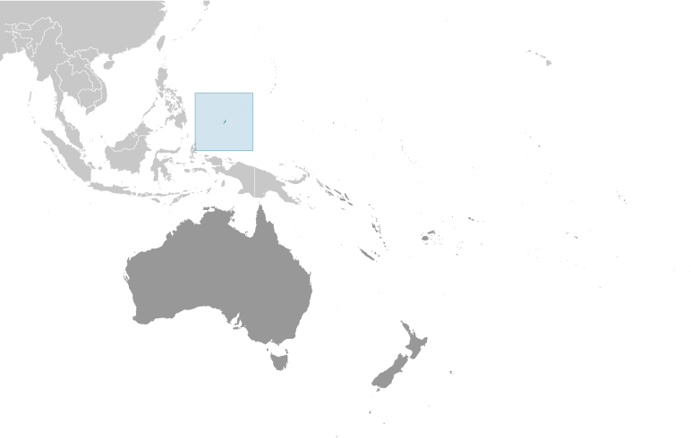
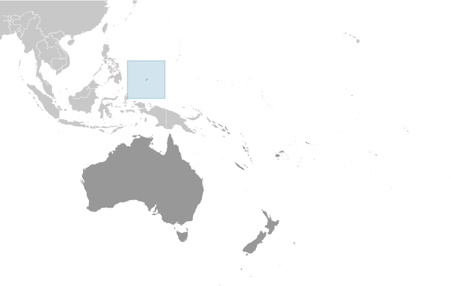

Australia-Oceania :: PALAU
Introduction :: PALAU
-
After three decades as part of the UN Trust Territory of the Pacific under US administration, this westernmost cluster of the Caroline Islands opted for independence in 1978 rather than join the Federated States of Micronesia. A Compact of Free Association with the US was approved in 1986 but not ratified until 1993. It entered into force the following year when the islands gained independence.
Geography :: PALAU
-
Oceania, group of islands in the North Pacific Ocean, southeast of the Philippines7 30 N, 134 30 EOceaniatotal: 459 sq kmland: 459 sq kmwater: 0 sq kmcountry comparison to the world: 198slightly more than 2.5 times the size of Washington, DC0 km1,519 kmterritorial sea: 12 nmcontiguous zone: 24 nmexclusive economic zone: 200 nmcontinental shelf: 200 nmtropical; hot and humid; wet season May to Novembervarying topography from the high, mountainous main island of Babelthuap to low, coral islands usually fringed by large barrier reefsmean elevation: NAelevation extremes: lowest point: Pacific Ocean 0 mhighest point: Mount Ngerchelchuus 242 mforests, minerals (especially gold), marine products, deep-seabed mineralsagricultural land: 10.8%arable land 2.2%; permanent crops 4.3%; permanent pasture 4.3%forest: 87.6%other: 1.6% (2011 est.)0 sq km (2012)most of the population is located on the southern end of the main island of Babelthuaptyphoons (June to December)inadequate facilities for disposal of solid waste; threats to the marine ecosystem from sand and coral dredging, illegal fishing practices, and overfishingparty to: Biodiversity, Climate Change, Climate Change-Kyoto Protocol, Desertification, Law of the Sea, Ozone Layer Protection, Wetlands, Whalingsigned, but not ratified: none of the selected agreementswesternmost archipelago in the Caroline chain, consists of six island groups totaling more than 300 islands; includes World War II battleground of Beliliou (Peleliu) and world-famous Rock Islands
People and Society :: PALAU
-
21,431 (July 2017 est.)country comparison to the world: 219noun: Palauan(s)adjective: PalauanPalauan (Micronesian with Malayan and Melanesian admixtures) 73%, Carolinian 2%, Asian 21.7%, caucasian 1.2%, other 2.1% (2015 est.)Palauan (official on most islands) 65.2%, other Micronesian 1.9%, English (official) 19.1%, Filipino 9.9%, Chinese 1.2%, other 2.8%note: Sonsoralese is official in Sonsoral; Tobian is official in Tobi; Angaur and Japanese are official in Angaur (2015 est.)Roman Catholic 45.3%, Protestant 34.9% (includes Evangelical 26.4%, Seventh Day Adventist 6.9%, Assembly of God .9%, Baptist .7%), Modekngei 5.7% (indigenous to Palau), Muslim 3%, Mormon 1.5%, other 9.7% (2015 est.)0-14 years: 19.69% (male 2,177/female 2,043)15-24 years: 16.68% (male 1,788/female 1,787)25-54 years: 45.89% (male 6,005/female 3,830)55-64 years: 9.65% (male 731/female 1,338)65 years and over: 8.08% (male 446/female 1,286) (2017 est.)total: 33.4 yearsmale: 32.7 yearsfemale: 35 years (2017 est.)country comparison to the world: 880.39% (2017 est.)country comparison to the world: 16611.3 births/1,000 population (2017 est.)country comparison to the world: 1748.1 deaths/1,000 population (2017 est.)country comparison to the world: 860.8 migrant(s)/1,000 population (2017 est.)country comparison to the world: 61most of the population is located on the southern end of the main island of Babelthuapurban population: 88.2% of total population (2017)rate of urbanization: 1.6% annual rate of change (2015-20 est.)MELEKEOK (capital) 299 (2012)at birth: 1.06 male(s)/female0-14 years: 1.07 male(s)/female15-24 years: 1 male(s)/female25-54 years: 1.57 male(s)/female55-64 years: 0.54 male(s)/female65 years and over: 0.37 male(s)/femaletotal population: 1.09 male(s)/female (2016 est.)total: 10.6 deaths/1,000 live birthsmale: 12.1 deaths/1,000 live birthsfemale: 9 deaths/1,000 live births (2017 est.)country comparison to the world: 133total population: 73.4 yearsmale: 70.2 yearsfemale: 76.8 years (2017 est.)country comparison to the world: 1351.71 children born/woman (2017 est.)country comparison to the world: 1709% of GDP (2014)country comparison to the world: 391.42 physicians/1,000 population (2010)4.8 beds/1,000 population (2010)improved:urban: 97% of populationrural: 86% of populationtotal: 95.3% of populationunimproved:urban: 3% of populationrural: 14% of populationtotal: 4.7% of population (2011 est.)improved:urban: 100% of populationrural: 100% of populationtotal: 100% of populationunimproved:urban: 0% of populationrural: 0% of populationtotal: 0% of population (2015 est.)NANANA55.3% (2016)country comparison to the world: 3definition: age 15 and over can read and writetotal population: 96.6%male: 96.8%female: 86% (2015 est.)total: 17 yearsmale: 16 yearsfemale: 18 years (2013)
Government :: PALAU
-
conventional long form: Republic of Palauconventional short form: Palaulocal long form: Beluu er a Belaulocal short form: Belauformer: Trust Territory of the Pacific Islands, Palau Districtetymology: from the Palauan name for the islands, Belau, which likely derives from the Palauan word "beluu" meaning "village"presidential republic in free association with the USname: Ngerulmudgeographic coordinates: 7 30 N, 134 37 Etime difference: UTC+9 (14 hours ahead of Washington, DC, during Standard Time)16 states; Aimeliik, Airai, Angaur, Hatohobei, Kayangel, Koror, Melekeok, Ngaraard, Ngarchelong, Ngardmau, Ngatpang, Ngchesar, Ngeremlengui, Ngiwal, Peleliu, Sonsorol1 October 1994 (from the US-administered UN trusteeship)Constitution Day, 9 July (1981), day of a national referendum to pass the new constitution; Independence Day, 1 October (1994)ratified 9 July 1980, effective 1 January 1981; amended 1992, 2004, 2008 (2016)mixed legal system of civil, common, and customary lawhas not submitted an ICJ jurisdiction declaration; non-party state to the ICCtcitizenship by birth: nocitizenship by descent only: at least one parent must be a citizen of Palaudual citizenship recognized: noresidency requirement for naturalization: note - no procedure for naturalization18 years of age; universalchief of state: President Tommy REMENGESAU (since 17 January 2013); Vice President Antonio BELLS (since 17 January 2013); note - the president is both chief of state and head of governmenthead of government: President Tommy REMENGESAU (since 17 January 2013); Vice President Antonio BELLS (since 17 January 2013)cabinet: Cabinet appointed by the president with the advice and consent of the Senate; also includes the vice president; the Council of Chiefs consists of chiefs from each of the states who advise the president on issues concerning traditional laws, customs, and their relationship to the constitution and laws of Palauelections/appointments: president and vice president directly elected on separate ballots by absolute majority popular vote in 2 rounds if needed for a 4-year term (eligible for a second term); election last held on 1 November 2016 (next to be held in November 2020)election results: Tommy REMENGESAU reelected president; percent of vote - Tommy REMENGESAU (independent) 51.3%, Surangel WHIPPS, Jr.(independent) 48.7%; Antonio BELLS elected vice presidentdescription: bicameral National Congress or Olbiil Era Kelulau consists of the Senate (13 seats; members directly elected in single-seat constituencies by majority vote to serve 4-year terms) and the House of Delegates (16 seats; members directly elected in single-seat constituencies by simple majority vote to serve 4-year terms)elections: Senate - last held on 1 November 2016 (next to be held in November 2020); House of Delegates - last held on 1 November 2016 (next to be held in November 2020)election results: Senate - percent of vote - NA; seats - independent 13; House of Delegates - percent of vote - NA; seats - independent 16highest court(s): Supreme Court (consists of the chief justice and 3 associate justices organized into appellate trial divisions; also within the Supreme Court organization are the Common Pleas and Land Courts)judge selection and term of office: justices nominated by a 7-member independent body consisting of judges, presidential appointees, and lawyers and appointed by the president; judges appointed until mandatory retirement at age 65subordinate courts: National Court and other 'inferior' courtsnoneNAACP, ADB, AOSIS, FAO, IAEA, IBRD, ICAO, ICRM, IDA, IFC, IFRCS, ILO, IMF, IMO, IMSO, IOC, IPU, MIGA, OPCW, PIF, Sparteca, SPC, UN, UNAMID, UNCTAD, UNESCO, WHOchief of mission: Ambassador Hersey KYOTA (since 12 November 1997)chancery: 1701 Pennsylvania Avenue NW, Suite 300, Washington, DC 20036telephone: [1] (202) 452-6814FAX: [1] (202) 452-6281consulate(s): Tamuning (Guam)chief of mission: Ambassador Amy HYATT (since 9 March 2015)embassy: Koror (no street address)mailing address: P. O. Box 6028, Koror, Republic of Palau 96940telephone: [680] 587-2920FAX: [680] 587-2911light blue with a large yellow disk shifted slightly to the hoist side; the blue color represents the ocean, the disk represents the moon; Palauans consider the full moon to be the optimum time for human activity; it is also considered a symbol of peace, love, and tranquilitybai (native meeting house); national colors: blue, yellowname: "Belau rekid" (Our Palau)lyrics/music: multiple/Ymesei O. EZEKIELnote: adopted 1980
Economy :: PALAU
-
The economy is dominated by tourism, fishing, and subsistence agriculture. Government is a major employer of the work force relying on financial assistance from the US under the Compact of Free Association (Compact) with the US that took effect after the end of the UN trusteeship on 1 October 1994. The US provided Palau with roughly $700 million in aid for the first 15 years following commencement of the Compact in 1994 in return for unrestricted access to its land and waterways for strategic purposes. The population enjoys a per capita income roughly double that of the Philippines and much of Micronesia.Business and leisure tourist arrivals reached a record 167,966 in 2015, a 14.4% increase over the previous year, but fell to 138,408 in 2016. Long-run prospects for tourism have been bolstered by the expansion of air travel in the Pacific, the rising prosperity of industrial East Asia, and the willingness of foreigners to finance infrastructure development. Proximity to Guam, the region's major destination for tourists from East Asia, and a regionally competitive tourist infrastructure enhance Palau's advantage as a destination.$292 million (2016 est.)$283 million (2015 est.)$252 million (2014 est.)note: data are in 2016 dollarscountry comparison to the world: 217$310 million (2016 est.)1.9% (2016 est.)11.4% (2015 est.)5.4% (2014 est.)country comparison to the world: 188$16,200 (2016 est.)$15,900 (2015 est.)$14,300 (2014 est.)note: data are in 2016 dollarscountry comparison to the world: 105household consumption: NA% 60.6%government consumption: NA% 27.2%investment in fixed capital: NA% 22.6%investment in inventories: 2%exports of goods and services: 55.1%imports of goods and services: -67.5% (2016 est.)agriculture: 3%industry: 19%services: 78% (2016 est.)coconuts, cassava (manioc, tapioca), sweet potatoes; fish, pigs, chickens, eggs, bananas, papaya, breadfruit, calamansi, soursop, Polynesian chestnuts, Polynesian almonds, mangoes, taro, guava, beans, cucumbers, squash/pumpkins (various), eggplant, green onions, kangkong (watercress), cabbages (various), radishes, betel nuts, melons, peppers, noni, okratourism, fishing, subsistence agricultureNA%11,610 (2016)country comparison to the world: 217agriculture: 1.2%industry: 12.4%services: 86.4% (2016)1.7% (2015 est.)4.1% (2012)country comparison to the world: 12NA%lowest 10%: NA%highest 10%: NA%revenues: $204.9 millionexpenditures: $177.6 million (2012 est.)66.1% of GDP (2016 est.)country comparison to the world: 68.8% of GDP (2016 est.)country comparison to the world: 424.1% of GDP (2016 est.)21.6% of GDP (2015)country comparison to the world: 1751 October - 30 September-1% (2016 est.)0.9% (2015 est.)country comparison to the world: 14$NA$-32 million (2016 est.)$-24.2 million (2015 est.)country comparison to the world: 60$117.5 million (2016 est.)$14.8 million (2015 est.)country comparison to the world: 193shellfish, tuna, other fish (many species)Greece 82.4%, US 6.9% (2016)$179.3 million (2016 est.)$176.9 million (2015 est.)country comparison to the world: 210machinery and equipment, fuels, metals; foodstuffsUS 24.6%, Japan 19.8%, China 14.3%, Guam 14.2%, Philippines 4.4% (2016)$580.9 million (31 December 2015 est.)country comparison to the world: 139$18.38 billion (31 December 2014 est.)$16.47 billion (31 December 2013 est.)country comparison to the world: 94the US dollar is used
Energy :: PALAU
-
population without electricity: 8,752electrification - total population: 59%electrification - urban areas: 62%electrification - rural areas: 45% (2012)
Communications :: PALAU
-
total subscriptions: 7,204subscriptions per 100 inhabitants: 34 (July 2016 est.)country comparison to the world: 203total: 24,000subscriptions per 100 inhabitants: 112 (July 2016 est.)country comparison to the world: 210general assessment: well-developed mobile sector recently boosted by satellite network capacity upgradesdomestic: fixed-line and mobile-cellular services available with a combined subscribership of over 140 per 100 personsinternational: country code - 680; satellite earth station - 1 Intelsat (Pacific Ocean) (2016)no broadcast TV stations; a cable TV network covers the major islands and provides access to 4 local cable stations, rebroadcasts (on a delayed basis) of a number of US stations, as well as access to a number of real-time satellite TV channels; about a half dozen radio stations (1 government-owned) (2017).pwtotal: 7,650percent of population: 36.0% (July 2016 est.)
Transportation :: PALAU
-
number of registered air carriers: 1inventory of registered aircraft operated by air carriers: 1 (2015)3 (2013)country comparison to the world: 194total: 11,524 to 2,437 m: 1 (2017)total: 21,524 to 2,437 m: 2 (2013)major seaport(s): Koror
Military and Security :: PALAU
-
no regular military forces; Palau National Police (2009)defense is the responsibility of the US; under a Compact of Free Association between Palau and the US, the US military is granted access to the islands for 50 years, but it has not stationed any military forces there (2008)
Transnational Issues :: PALAU
-
maritime delineation negotiations continue with Philippines, Indonesia